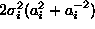
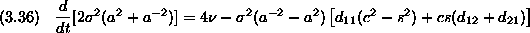
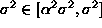

The vorticity dynamics equations (3.2,3.3) have many known integral invariants, so one hopes that the computational method also preserves these properties. Of course, a convergent method will satisfy these properties approximately, but some methods have the advantage of mimicking the physical structure of solutions to Navier-Stokes (3.2,3.3) by capturing certain integral invariants exactly. Unfortunately, ECCSVM does not have the property of exactly preserving first or second integral moments. Since merging and refinement (see §4) preserve all first and second moments, only the dynamics of ECCSVM will affect the integral invariants of the approximation.
Satisfying the first moment of vorticity is a problem for vortex methods
using blobs of dissimilar width [13] though for corrected
core spreading methods these discrepancies are controlled automatically by
the parameter because it both restricts the variation in  and bounds
and bounds  close to unity. Solutions of Navier-Stokes also satisfy
satisfies the relation
close to unity. Solutions of Navier-Stokes also satisfy
satisfies the relation
for the second moment of vorticity. For an elliptical Gaussian blob of unit circulation, the second moment is given by

. Here, indices are not necessary because this only concerns one blob. The evolution of the second moment is derived from the system (3.12).
Of course, the first term is the exact physical integral invariant. The
second term is  because
because

and
The remaining term involves the flow derivatives which are assumed to be bounded.